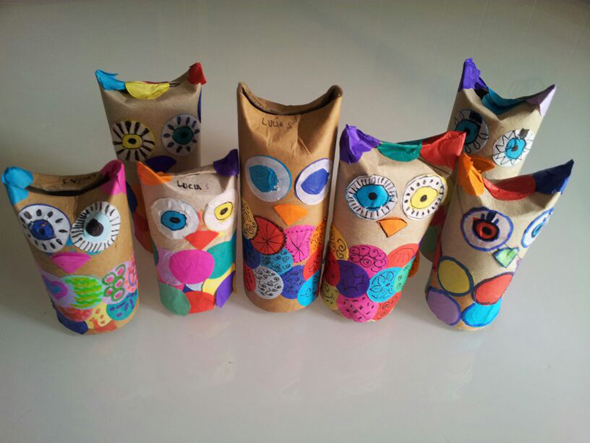

Start›Blog›Material›AnleitungMaterial · Druckvorlagen · PapierrollenAnleitung19. Oktober 2013 DE, EN, ES. Give away Tüten von Leos Geburtstag. Riesen Konfetti und Eulen- Anleitung. Durch das große Interesse an der Anleitung könnt Ihr diese jetzt auf DE, EN, ES herunterladen.  Gracias Lorena :-)Schlagwörter: recyceln← Surfende DrachenSchilfblatt Boote →